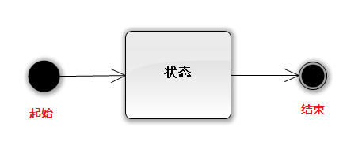
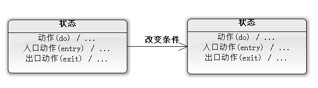
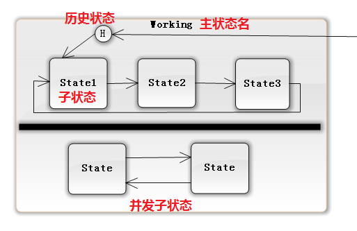
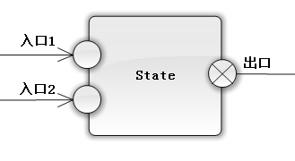

基本符号集
 定义：一种表征系统变化的方法可以说成是对象改变了自己的转态以响应时间和时间的流逝。在状态中增加细节
 入口动作(entry)：系统进入该状态时的动作。 动作(do)：系统处于该状态时的动作。 出口动作(exit)：系统离开该状态时的动作。 改变条件：系统从一个状态变成另一个状态的触发条件。子状态
 子状态：在一个状态中，可能还要在该状态里面进行一些其他状态的变化。 并发子状态：在一个状态里面，多个子状态同时运行。 历史状态：离开该状态时，记录子状态的情况，下次进入该状态从历史状态运行。多个入口
 进入一个状态可以有多个入口。